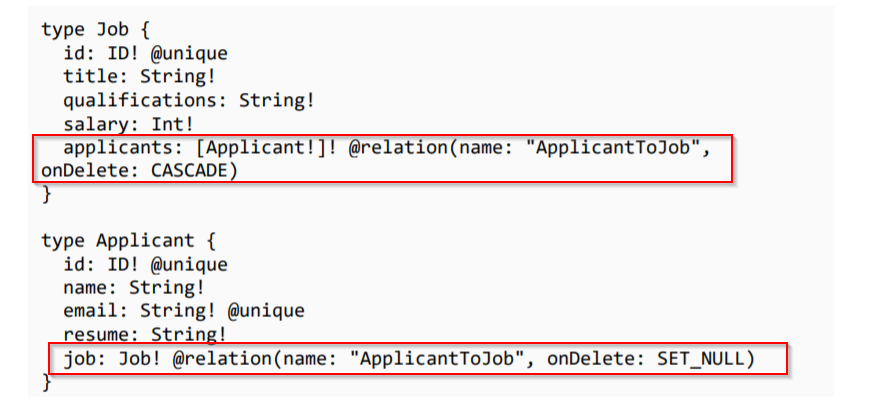

prisma provides us with a relationdirective, that helps us to customize relationships between existing relations. For example when a user gets deleted all it's post and comments should be deleted as well.

As it can be seen here.
1. We are setting onDeleteJob to CASCADEwhich means if a job gets deleted all it's applicants should also be removed
2. In the applicants we setting onDeleterelation to SET_NULL (default behaviour)that means removing a individual applicant should not remove a Job